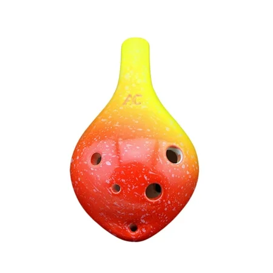

A ocarina de quatro furos é a escolha ideal para quem está começando no mundo da música. Compacta e prática, ela permite tocar melodias simples com facilidade, sendo perfeita para crianças, estudantes e curiosos que desejam explorar o universo dos instrumentos de sopro sem complicações. Seu design minimalista garante uma pegada confortável e um aprendizado rápido.
Apesar da simplicidade, o som produzido é doce e encantador, capaz de transformar pequenas melodias em experiências agradáveis. Por ser leve e portátil, é uma excelente opção para presentear ou para quem deseja ter um instrumento acessível e divertido, sem abrir mão da qualidade sonora.
R$90,00